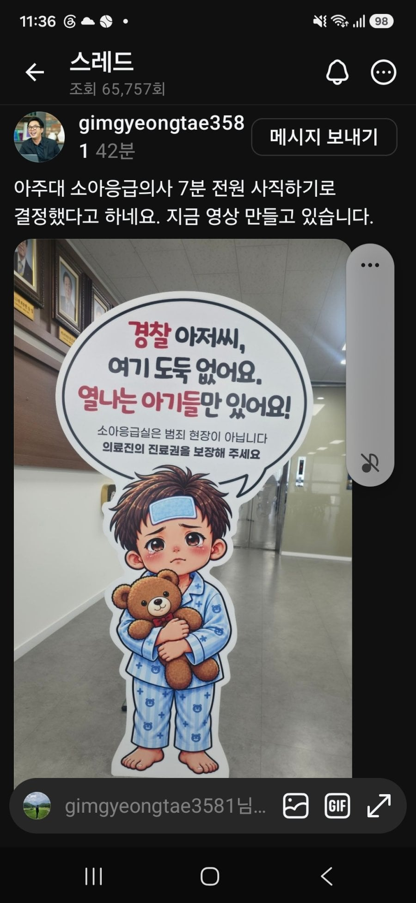
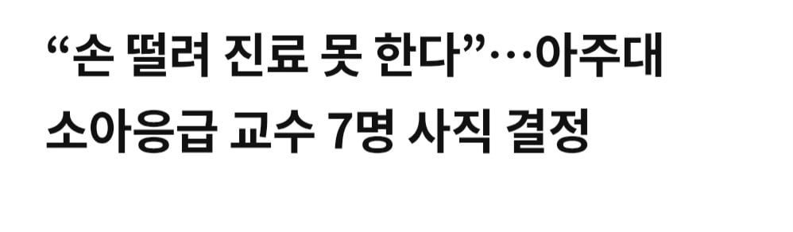

사람들이 의룡인 거리는것도 의사 정원 늘리는것 반대한게 원죄로 작동하는거 같네
실제로 억울한거든 정당한 압수수색이든을 떠나서, 의사 정원이 부족하니까 의사 그만둔다 이게 사람들에게 위험으로 다가오는거거든
굳굳 좋아요
퍼포먼스입니다
곧 연봉좀 올려서 전원 복직 예정입니다
의사란 본래 그런것입니다
소아과는 달라 특히 소아과 응급은 진짜
돈 아무리 줘도 사명감 없으면 못하는데라
경기남부 저기 한군데밖에 없어
복직하겠냐? 그냥 개인의원 차려서 독립하던가 피부과를 차리겠지 ...
사명감도 좋은데 결국은 의사수가 부족하다는 사실을 잘 알고 있고 그걸 무기로 사용하고 있는 것이 현 상황인거 같은데....?
무기고 나발이고 그 껀덕지를 준건생각안하냐?
대체 의사들한테 왜저런거임?
저거보고 누가 소아과감?
안그래도 처참한데 이제 진짜 없어질듯
? 내가 이해한 게 잘못된 부분이 있을순 있지만 결국 아이 부모가 경찰에 신고했다. 그럼 여기서 경찰의 대응이 소아과 의사는 죄가 없습니다 돌아가세요 라고 대응해야 하는가? 그건 아니겠지? 그래서 조사라는 대응을 했고
의사입장에선 그게 꼬우니 전원 사직으로 대응한거잖슴? 이 중에서 가장 막장대응한건 의사인거 같은데. 물론 경찰이나 아이 부모도 과잉 대응일순 있지만 전원사직이 가장 비정상적으로 보인거임
아니 ㅅㅂ 자료요청도 없이 진료시간에 들이닥쳐서 무슨 회사 감사하는것마냥 컴퓨터자료 다 훑어보고하는게 정상임?
신고자 말만듣고 뭔 범죄자한테하듯이 들이박은거잖아
충분히 자료요청공문으로도 충분한건데 니들 자료없앨수도 있으니 압수수색한다 하고 범죄자취급한거임
몇년째 지원자, 연봉 최저를 찍는 비인기학과인데 지금하고있는사람들은 사명감으로 일하고있다고 봐도 되는상황임
그런데 저딴식으로 범죄자취급당한거니 시팔 안할란다 이러는거지
의룡인사태로 이미짔창난의사들이지만 쌓여온게 있으니 저러는거지 저사람들은 지들 밥줄 놓는게 재미로하는거같냐?
좋다 좋아~ 어떤 미꾸라지 한마리때문에 의사들 다 사직~
의사를 욕할게 아니라 미꾸라지를 갈아서 추어탕 만들어먹어야지 왜 의사를 욕하냐
고래들 싸움에 새우등만 터지는 격이지 뭐
일반인이 의사나 경찰들 편드는 것도 욕하는 것도 다 본질적으로 의미없는 일임
어차피 죽는 건 본인들 자식들이고 누구 잘잘못 따져봐야 시스템이 망가져있는데 뭔 소용이 있겠음
근데 저분들은 그만두면 어디감??
지금 의사 일자리를 걱정하는거임...?
걍 궁금한거임 개원의가 아니고 사직해봐야 다른곳 취업해야할탠데 어디가서 일하나 궁금한거
소아과는 인기 많을것 같음(잘모름)
요즘 소아과 인력부족해서 난리
ㄹㅇ악받친 정치병자정신병자 다모였네 ㅋㅋ
이걸 의사들이 그만뒀다는거에만 매몰되어서 이걸 보이콧으로 보나 아니면 번아웃으로 보냐에 따라서 개붕이들 이 비난하거나 변호하거나 그러는거 같은데
소아과 의사들 일 강도 보면 이건 보이콧이 아니라 번아웃 같은데
리플 계속 읽어보면 사회생활 한 번도 안해본 찐따들 진짜 많아
맥락은 하나도 안보고 단지 "의사" 단어 하나에만 꽃혀서 긁는 거 밖에 못해
사명감 하나만으로 버티고 버틴 사람들이 나가 떨어지는데 그걸 비웃고 쳐있으니
경기 남부권 저 아래서 애기 하나 댈고 사는 입장에서 이제 응급 소아과가 없다...
분당 서울대 하나 남았나?
근데 거기 가려면 헬기 말고는 답이 없어
머저리들 따로 있고 피해보는 사람 따로 있는게 짜증날 뿐임
ㄹㅇ ㅂㅅ들임
의룡인 건과는 별개로 개좆같은 진상도 많으면서 돈도 안되는게 소아과임
몇년째 뉴스에서 지원자수 최저찍고 이제는 없는 수준임 비율로보면 장교나 하사들처럼 군인취급받는게 소아과인데
댓글 수준 실화임???
소아 응급은 진짜 사명으로 하는 곳인데...
소송 위험도 크고 아무도 가기 싫어하는 곳에서
일하는 분들한테 할 소리냐??
의사라고 다 같은 의사가 아닐 텐데 댓글 함부로 쓰는 친구들 많네
공무원이든 중소기업이든 자영업자든 누칼협에 좆같으면 그만두라는 스탠스였으면서 의사가 그만둔다니 사명감이니, 환자목숨이니 이상한 잣대 들이밀어서 욕하는 꼴이 우습노
지금이라도 소아과 어떻게 해야하는거 아닌가.
피부과 전부 하향 평준화 만들고 기피 전공도 골고루 가도록 해야지
사명감이 없네 손 떨리면 약 먹고 진료해야지 쯧쯔
여기 지금 wwe 아님...말 진짜 조심해야해
7명 나가면 새로운 7명이 대기하고 있겠지
그니까. 소아과 교수면 벼슬 맞지
극한의 비인기과라 갈려나가면서 시스템 유지하던 사람들인데
소아응급과 교수가 7명이나 사라지면 이제 애는 누가 살려주누..